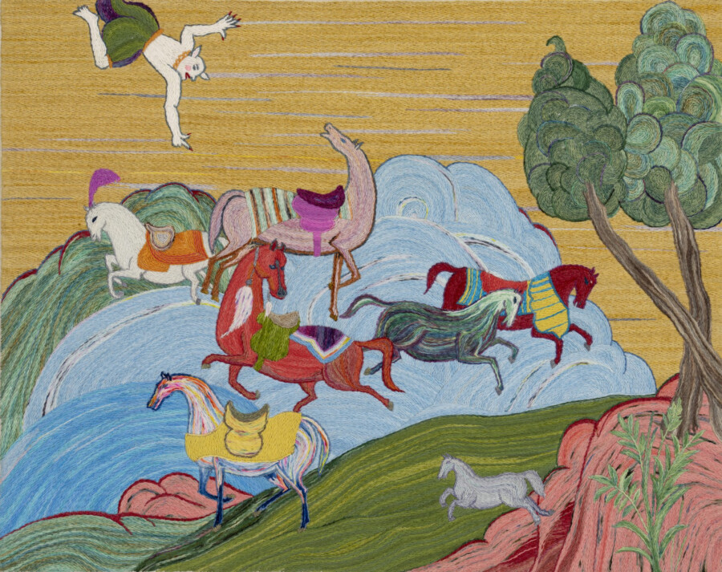

Soheila Kayoud: When the Div Came Home
ANDREW RAFACZ is delighted to announce When the Div Came Home, a solo exhibition of embroidered paintings from Soheila Kayoud, in Gallery Two. The exhibition opens Friday, February 20th and continues through Saturday, April 4th, 2026. This is the artist’s first solo exhibition with the gallery.
Kayoud’s intricate and colorful embroidered paintings transport figures and narratives from mythology into intimate, contemporary and decidedly positive human-centric settings. The works in this exhibition concentrate on the div, a demon-like creature depicted in Middle Eastern mythology and likely of Persian origin. Traditionally portrayed as monstrous or threatening, Kayoud reimagines these mythological beings as familiar, gentle, and emotionally present. Through embroidery, a medium historically associated with care, patience, and domestic labor, she softens and humanize these figures, inviting viewers to encounter them without fear.
At the core of the artist’s practice is an exploration of otherness and the desire to normalize and familiarize cultures that are often misunderstood or marginalized. By placing mythological “others” into everyday scenes, she questions how difference is constructed and how cultural narratives shape belonging. The works draw from personal experiences of displacement and navigating identity, using mythology as a lens through which contemporary issues of racism, migration, and cultural alienation can be discussed.
Although Kayoud’s subject matter engages with challenging social realities, her visual language remains poetic, colorful, and joyful. Humor, warmth, and ornamentation become tools for accessibility, allowing space for dialogue rather than confrontation. Through these embroidered paintings, she creates moments of recognition and empathy, where the unfamiliar becomes familiar and the “other” is seen as fully human.
SOHEILA KAYOUD (Iranian, b. 1956) lives and works in Brooklyn, New York. She began her studies in Iran at the College of Dramatic Arts with the goal of becoming a film director. Following the 1979 Islamic Revolution, Kayoud was forced to abandon her studies and relocate to the United States. She received an Associate of Science degree in Surgical Technology from Nassau Community College, a BA in Psychology and an MS in Applied Statistics from Southern Connecticut State University, and a Master of Liberal Studies from Lake Forest College in 2007. She was recently included in the group exhibition Hubba Hideout, curated by Tony Cox of Club Rhubarb, in partnership with CANADA (New York, NY).